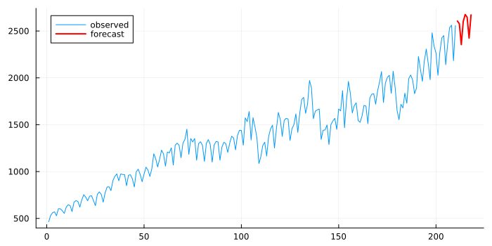
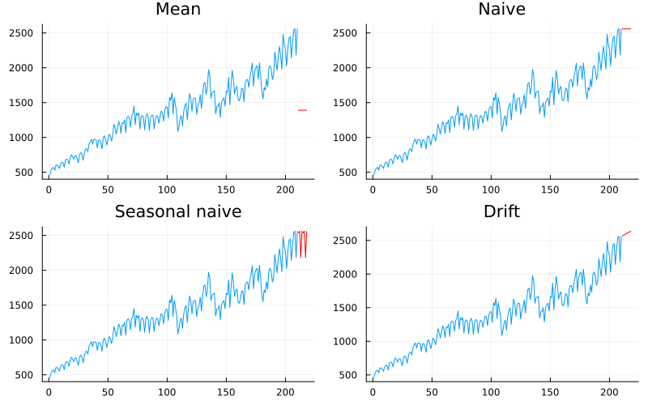
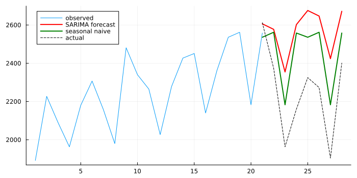
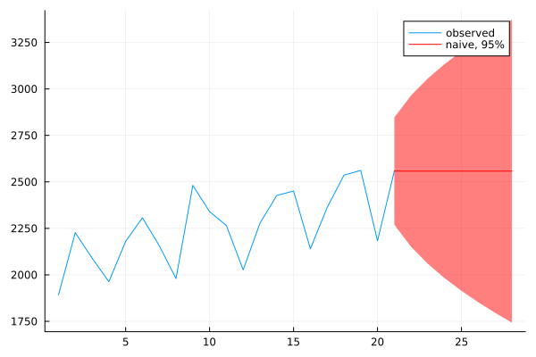
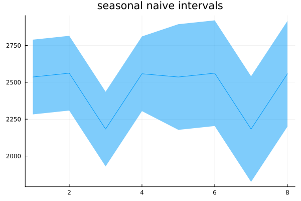
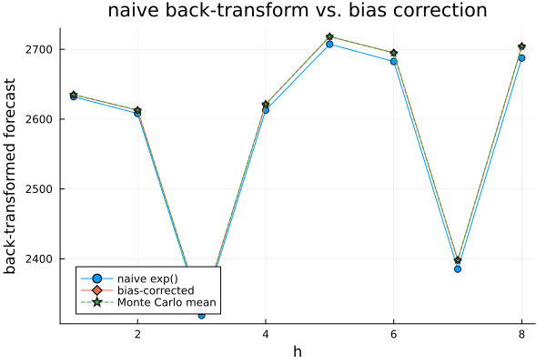
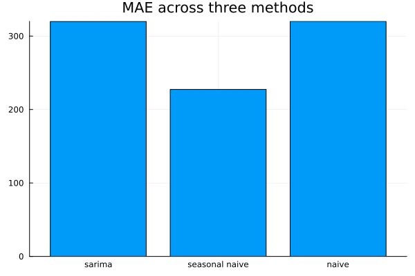

Forecasting
Twenty-one chapters in, and the book finally forecasts something. The delay was deliberate — a forecast from an unchecked model is a guess with a confidence interval attached to make it look more certain than it is — but it has been a long wait, and it is worth acknowledging that before diving in.
What a forecast is
using TSAnalytics, Plots
d = dataset("aus_production")
y = Float64.(d.Cement)
n = length(y)
h = 8
train = y[1:n-h]
test = y[n-h+1:end]
m = fit_sarima(train, (0,1,1), (0,1,1,4))
f = forecast(m, train, h)
plot(train; label="observed", size=(700,350))
plot!((n-h+1):n, f.point; label="forecast", color=:red, linewidth=2)
A fitted seasonal model, extended forward, with no interval drawn — a line continuing past the data. It looks authoritative, and on its own it is nearly useless: it says nothing about how wrong it might be. The rest of this chapter is mostly about the missing part.
Four forecasts that require no model
f_mean = mean_forecast(train, h)
f_naive = naive(train, h)
f_sn = seasonal_naive(train, h, 4)
f_drift = drift(train, h)
p1 = plot(train; label=""); plot!((n-h+1):n, f_mean.point; label="mean", color=:red, title="Mean")
p2 = plot(train; label=""); plot!((n-h+1):n, f_naive.point; label="naive", color=:red, title="Naive")
p3 = plot(train; label=""); plot!((n-h+1):n, f_sn.point; label="seasonal naive", color=:red, title="Seasonal naive")
p4 = plot(train; label=""); plot!((n-h+1):n, f_drift.point; label="drift", color=:red, title="Drift")
plot(p1, p2, p3, p4; layout=(2,2), size=(800,500), legend=false)
Each is trivial to compute and each is the right answer for some kind of series. The mean forecast is a flat line at the average — right when a series has neither trend nor seasonality. Naive is a flat line at the last observed value — optimal for a random walk, Chapter 8's own result, and it means that for many financial series no model beats it. Seasonal naive repeats the last full period — embarrassingly hard to beat on strongly seasonal data, as the next chart shows directly. Drift extends the straight line from the first observation to the last.
println("RMSE, held-out ", h, " quarters of Cement production:")
println(" fitted SARIMA(0,1,1)(0,1,1)[4]: ", round(rmse(test, f.point), digits=2))
println(" seasonal naive: ", round(rmse(test, f_sn.point), digits=2))
println("MAE: sarima=", round(mae(test, f.point), digits=2), " seasonal naive=", round(mae(test, f_sn.point), digits=2))
println("MAPE: sarima=", round(mape(test, f.point), digits=2), "% seasonal naive=", round(mape(test, f_sn.point), digits=2), "%")
plot(train[end-20:end]; label="observed", size=(700,350))
plot!(21:(21+h-1), f.point; label="SARIMA forecast", color=:red, linewidth=2)
plot!(21:(21+h-1), f_sn.point; label="seasonal naive", color=:green, linewidth=2)
plot!(21:(21+h-1), test; label="actual", color=:black, linestyle=:dash)
A fitted SARIMA(0,1,1)(0,1,1)[4] against real Australian cement production, checked on eight held-out quarters — and it loses, clearly, to the benchmark that took no fitting at all: RMSE 353.0 against 244.7, MAE 319.9 against 227.4, MAPE 14.9% against 10.4%. This is not a rare or contrived outcome; series with a strong, stable seasonal pattern and comparatively little else going on are exactly where seasonal naive is hardest to beat, and this is the chapter's single most useful chart precisely because of that. A forecast that cannot outperform repeating last year's values has not earned its complexity, and without a benchmark on the same axes nobody watching only the SARIMA line would know it had lost.
How wrong might it be
p1 = plot(train[end-20:end]; label="observed")
plot!(21:(21+h-1), f_naive.point; ribbon=(1.96 .* f_naive.se, 1.96 .* f_naive.se), label="naive, 95%", color=:red)
println("naive se by horizon: ", round.(f_naive.se, digits=1))
p1
The naive forecast's own intervals, computed by this package as σ̂·√h (fpp3 Table 5.2) — reported above, and they widen visibly: 147.0 at h=1 growing to 415.7 at h=8, tracking √h exactly. This is the same fanning Chapter 19 showed for an integrated ARIMA forecast, for the identical reason: naive is the point forecast of a random walk, and under a random walk, uncertainty about the level accumulates without bound as the horizon grows.
println("seasonal naive se by horizon: ", round.(f_sn.se, digits=1))
plot(f_sn.point; ribbon=(1.96 .* f_sn.se, 1.96 .* f_sn.se), title="seasonal naive intervals", legend=false)
Seasonal naive's interval width is a genuine step function of the horizon rather than a smooth curve: constant at 129.3 for h = 1 through 4, then jumping to 182.8 for h = 5 through 8. The shape looks like a bug the first time it is seen. It is not — it follows directly from the formula σ̂·√(k+1) with k = ⌊(h-1)/4⌋, because within one seasonal cycle every forecast step is anchored to the same historical observation (last year's same quarter), so the uncertainty genuinely does not grow until the horizon reaches back to a different year's worth of anchor.
using DelimitedFiles
y_air = Float64.(readdlm(TSAnalytics.AIR_PASSENGERS, ','; skipstart=1)[:, 2])
train_short = y_air[1:30] # a short monthly series, m=12
mper = 12
resid_sn = train_short[(mper+1):end] .- train_short[1:end-mper]
T = length(train_short)
sigma_correct = sqrt(sum(abs2, resid_sn) / (T - mper))
sigma_wrong = sqrt(sum(abs2, resid_sn) / (T - 1))
println("T=", T, " m=", mper)
println("σ̂, correct divisor (T-m=", T-mper, "): ", round(sigma_correct, digits=2))
println("σ̂, wrong divisor (T-1=", T-1, "): ", round(sigma_wrong, digits=2))
println("ratio: ", round(sigma_wrong/sigma_correct, digits=3), " — intervals ", round(100*(1-sigma_wrong/sigma_correct), digits=1), "% too narrow")T=30 m=12
σ̂, correct divisor (T-m=18): 22.75
σ̂, wrong divisor (T-1=29): 17.92
ratio: 0.788 — intervals 21.2% too narrowThe residual standard deviation's divisor differs by method — T − m for seasonal naive, not T − 1 — and it is easy to get wrong by reaching for the same formula used everywhere else. On thirty months of the airline series (m = 12), computing it with T − 1 instead of the correct T − m gives intervals that are systematically 21.2% too narrow. On a longer series the two divisors converge and the mistake mostly hides; on a short monthly series, exactly the case where an honest interval matters most, it does not.
Forecasting through a transformation
using Random
logtrain = log.(train)
m_log = fit_sarima(logtrain, (0,1,1), (0,1,1,4))
f_log = forecast(m_log, logtrain, h)
naive_bt = exp.(f_log.point)
bias_bt = exp.(f_log.point .+ (f_log.se .^ 2) ./ 2)
Random.seed!(5)
nsim = 200_000
mc_mean = [sum(exp.(f_log.point[hh] .+ f_log.se[hh] .* randn(nsim))) / nsim for hh in 1:h]
plot(1:h, naive_bt; marker=:circle, label="naive exp()")
plot!(1:h, bias_bt; marker=:diamond, label="bias-corrected")
plot!(1:h, mc_mean; marker=:star5, label="Monte Carlo mean", linestyle=:dash,
xlabel="h", ylabel="back-transformed forecast", title="naive back-transform vs. bias correction")
println("h naive-exp bias-corrected Monte Carlo mean")
for hh in 1:h
println(hh, " ", round(naive_bt[hh],digits=1), " ", round(bias_bt[hh],digits=1), " ", round(mc_mean[hh],digits=1))
endh naive-exp bias-corrected Monte Carlo mean
1 2632.1 2635.0 2635.1
2 2608.0 2612.7 2612.9
3 2318.9 2324.7 2324.3
4 2612.8 2621.1 2621.5
5 2707.3 2718.0 2718.4
6 2682.6 2695.1 2694.7
7 2385.2 2398.1 2398.1
8 2687.5 2704.1 2704.5Chapter 7 introduced this transform; here it has real consequences. Exponentiating the point forecast on the log scale gives approximately the median of the back-transformed distribution, not its mean — and for a right-skewed series (which anything modelled on logs typically is) the median sits below the mean. The naive back-transform above (2632.1 at h=1) sits consistently a little below the bias-corrected value (2635.0), and the bias-corrected value matches a direct Monte Carlo simulation of the log-scale forecast distribution almost exactly (2635.1) — confirming the correction formula, exp(ŷ + σ̂²/2), is doing what it claims. Checked directly against this package's source: boxcox_inv performs the exact, un-corrected inverse only — exp(y) when λ = 0, with no bias adjustment built in. A user who forecasts on a transformed scale and back-transforms with boxcox_inv alone is getting the median-like naive version, not the mean, and should apply the correction by hand if the mean is what is actually wanted. If someone asked for an expected value and this went unnoticed, the answer they received is consistently too low, with nothing about it announcing that fact.
Measuring how wrong it was
println("MAE: sarima=", round(mae(test,f.point),digits=1), " seasonal_naive=", round(mae(test,f_sn.point),digits=1), " naive=", round(mae(test,f_naive.point),digits=1))
println("RMSE: sarima=", round(rmse(test,f.point),digits=1), " seasonal_naive=", round(rmse(test,f_sn.point),digits=1), " naive=", round(rmse(test,f_naive.point),digits=1))
println("MAPE: sarima=", round(mape(test,f.point),digits=2), " seasonal_naive=", round(mape(test,f_sn.point),digits=2), " naive=", round(mape(test,f_naive.point),digits=2))
bar(["sarima","seasonal naive","naive"], [mae(test,f.point), mae(test,f_sn.point), mae(test,f_naive.point)]; legend=false, title="MAE across three methods")
MAE and RMSE agree on the ranking here (seasonal naive best, plain naive worst), which will not always be true — RMSE punishes large errors more heavily than MAE does, because it squares them before averaging, and whether that is the right thing to optimise for is a judgement about the application, not about statistics. A single catastrophic miss matters more under RMSE; several medium-sized misses matter more, proportionally, under MAE.
MAPE's failures are worth stating plainly rather than apologetically: it is undefined at a true value of zero, it penalises over-prediction and under-prediction asymmetrically, and it is meaningless for a series that can go negative. It remains the most-used accuracy metric in day-to-day business forecasting, which is worth reporting without moralising about it.
println("MASE: sarima=", round(mase(test,f.point,train; sp=4),digits=3),
" seasonal_naive=", round(mase(test,f_sn.point,train; sp=4),digits=3),
" naive=", round(mase(test,f_naive.point,train; sp=1),digits=3))
in_sample_actual = train[2:end]
in_sample_pred = train[1:end-1]
println("MASE, naive predicting its own in-sample one-step residuals: ", mase(in_sample_actual, in_sample_pred, train; sp=1))MASE: sarima=3.249 seasonal_naive=2.31 naive=2.803
MASE, naive predicting its own in-sample one-step residuals: 1.0MASE divides by the naive forecast's own in-sample mean absolute error, so a value below 1 beats that benchmark and above 1 loses to it — comparable across series measured in different units, which none of the metrics above are. On the multi-step out-of-sample comparison above, seasonal naive's 2.31 beats the SARIMA fit's 3.25, echoing the earlier chart's RMSE ranking on a scale that would carry over unchanged to a completely different series.
The identity worth showing: evaluated against its own in-sample, one-step-ahead residuals — ŷ[t] = y[t-1], checked against exactly the denominator MASE itself is built from — naive's own MASE comes out at exactly 1.0, by construction, checked directly above rather than asserted. It is a clean fact and a genuine test: this package's mase and its naive satisfy it to machine precision. (The 2.31/2.80 values two lines up are a different, legitimate quantity — genuine multi-step, out-of-sample forecast errors, which need not equal 1 for any method, including naive itself, evaluated that way.)
MAPE is the default reported accuracy metric across most Indian corporate and government forecasting practice, and a great deal of Indian data is exactly what MAPE handles worst — series with genuine zeros, and series with values small enough that a small absolute error becomes an enormous percentage. District-level agricultural output and sub-category industrial production both do this routinely: a reported MAPE of 400% on such a series usually means one month had a value near zero, not that the forecast was catastrophically bad. MASE has neither problem — it needs no true value in the denominator at all — and it is barely used in practice.
Where this leaves you
You can forecast, put an honest interval around it that widens the way the model's own uncertainty says it should, and check whether the result beat a benchmark that took no effort to build. Everything in this chapter has been measured on one held-out period at the end of one series. One split is one draw, and a method can win it by luck as easily as by merit. Chapter 23 asks how much that should worry you.